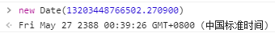
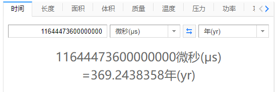

上一篇的源码看得十分无趣，官方文档跟黑心棉一样渣。
这一篇讲讲windows操作系统上的时间戳实现，由于类的声明，方法解释上一篇都贴过了，所以这次直接上对应版本的代码。
windows与mac很不一样，实现了一个新的Clock类来管理时间，如下。
// We implement time using the high-resolution timers so that we can get
// timeouts which are smaller than 10-15ms. To avoid any drift, we
// periodically resync the internal clock to the system clock.
class Clock final {
public:
Clock() : initial_ticks_(GetSystemTicks()), initial_time_(GetSystemTime()) {}
Time Now() { /* */ }
Time NowFromSystemTime() { /* */ }
private:
static TimeTicks GetSystemTicks() { /* */ }
static Time GetSystemTime() { /* */ }
TimeTicks initial_ticks_;
Time initial_time_;
Mutex mutex_;
};从注释和方法名可以看出，windows完全用这个新类代替了老的Time、TimeTicks，因为这个方法拥有更好的性能，这个类同时会周期性的与系统时间同步数据。
下面正式开始。
先从Now方法看起，看windows系统是如何获取本地的时间戳。
DEFINE_LAZY_LEAKY_OBJECT_GETTER(Clock, GetClock)
#define DEFINE_LAZY_LEAKY_OBJECT_GETTER(T, FunctionName, ...) \
T* FunctionName() { \
static ::v8::base::LeakyObject<T> object{__VA_ARGS__}; \
return object.get(); \
}
Time Time::Now() { return GetClock()->Now(); }这个方法的定义也不一般，直接用了一个特殊宏，宏就不展开了，简单说就是懒加载，调用的时候会分配空间生成一个Clock类，初始化完后第二次调用就直接返回了，当成一个单例来理解。
直接看宏的返回类型，刚好是上面的Clock，该类只有一个无参构造函数，初始化两个时间戳属性。
先看后那个，也就是系统时间的时间戳。
static Time GetSystemTime() {
FILETIME ft;
::GetSystemTimeAsFileTime(&ft);
return Time::FromFiletime(ft);
}这里的FILETIME和GetSystemTimeAsFileTime都是windowsAPI，可以获取当前系统的日期和时间，但是返回值很奇怪。
typedef struct _FILETIME {
DWORD dwLowDateTime;
DWORD dwHighDateTime;
} FILETIME, *PFILETIME, *LPFILETIME;Contains a 64-bit value representing the number of 100-nanosecond intervals since January 1, 1601 (UTC).
这是结构体的声明与解释，High、Low分别代表时间的高位与地位，而那个方法就是配合这个使用的。
可以从上面看到，这个API返回的时间竟然是从1601年1月1日开始算的，不知道那一年发生了什么。
下面写一个测试代码。
int main()
{
FILETIME ft;
LARGE_INTEGER t;
::GetSystemTimeAsFileTime(&ft);
t.LowPart = ft.dwLowDateTime;
t.HighPart = ft.dwHighDateTime;
cout << t.QuadPart << endl;
}得到的输出为132034487665022709，由于单位是100纳秒，所以这个数字乘以100的，然后换算一下。

由于基准是1601年，而Date是从1970年开始算，所以年份上差了369年，刚好是2019，很合理。
来看看V8的处理。
// Time between windows epoch and standard epoch.
static const int64_t kTimeToEpochInMicroseconds = int64_t{11644473600000000};
Time Time::FromFiletime(FILETIME ft) {
// 特殊情况处理
if (ft.dwLowDateTime == 0 && ft.dwHighDateTime == 0) {
return Time();
}
if (ft.dwLowDateTime == std::numeric_limits<DWORD>::max() &&
ft.dwHighDateTime == std::numeric_limits<DWORD>::max()) {
return Max();
}
// 换算
int64_t us = (static_cast<uint64_t>(ft.dwLowDateTime) +
(static_cast<uint64_t>(ft.dwHighDateTime) << 32)) / 10;
return Time(us - kTimeToEpochInMicroseconds);
}前面的特殊情况看看就行了，主要是换算这一步，就是简单的将高低位的数值拼到了一起，除以10之后，单位从100纳秒变成了微秒。
最后的计算，也是为了平衡标准的时间戳和windows时间戳两者的差异，如下。

为什么不是1970 - 1601 = 369年整呢？因为中间有闰年，很合理。
最后得到微秒单位的标准时间戳，将该数值赋到类的属性上。
回到最初的Now方法，初始化完后，会调用Clock自身的Now方法获取最终的时间戳，如下。
Time Now() {
// 一个误差临界值
const TimeDelta kMaxElapsedTime = TimeDelta::FromMinutes(1);
// 我目前不想解析所有关于锁的东西
MutexGuard lock_guard(&mutex_);
// 再次获取当前的硬件时间戳与本地时间戳
TimeTicks ticks = GetSystemTicks();
Time time = GetSystemTime();
// 这里进行误差修正
TimeDelta elapsed = ticks - initial_ticks_;
// 1.当前时间小于初始化时间 可参考上一篇中类方法的注释(the system might adjust its clock...)
// 2.硬件时间戳的时间差超过临界值 这种情况基本可以认定初始化的时间完全不可信了
if (time < initial_time_ || elapsed > kMaxElapsedTime) {
initial_ticks_ = ticks;
initial_time_ = time;
return time;
}
return initial_time_ + elapsed;
}虽然在构造函数中获取了时间戳，但是V8考虑到由于函数调用、系统修正等原因导致的误差(比如第一次初始化)，再次进行了修正，具体操作和原因可以直接看注释，最后返回的时间戳是计算获得的理论本地时间戳加上硬件时间戳差值。
至于NewFromSystemTime就比较简单了，在mac中这两个方法是一个，在windows里如下。
Time NowFromSystemTime() {
MutexGuard lock_guard(&mutex_);
// 更新两个时间戳
initial_ticks_ = GetSystemTicks();
initial_time_ = GetSystemTime();
// 直接返回最新获得的时间戳
return initial_time_;
}不计算任何东西，直接返回系统API的时间戳，可以配合注释来理解这两个方法。
尴尬了，没想到V8在Time阶段把两个时间戳全用上了。稍微看了一下TimeTicks的实现，发现还有点意思，所以这一篇先这样了，太长了写的累。